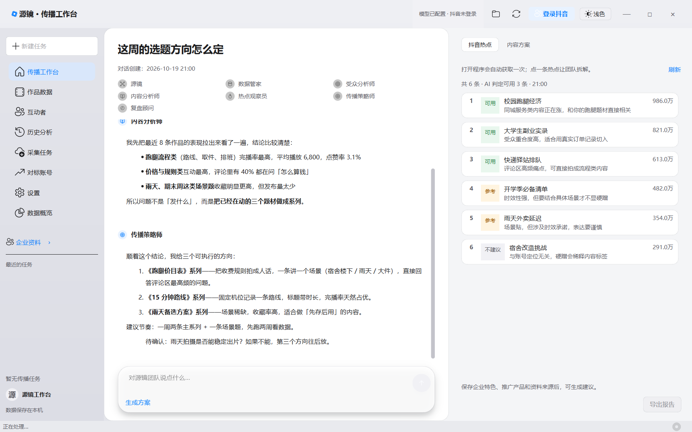
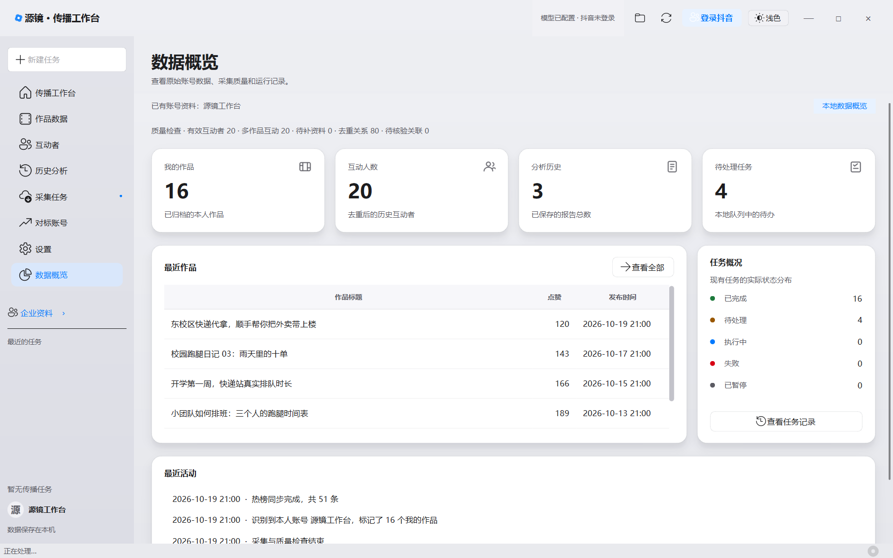
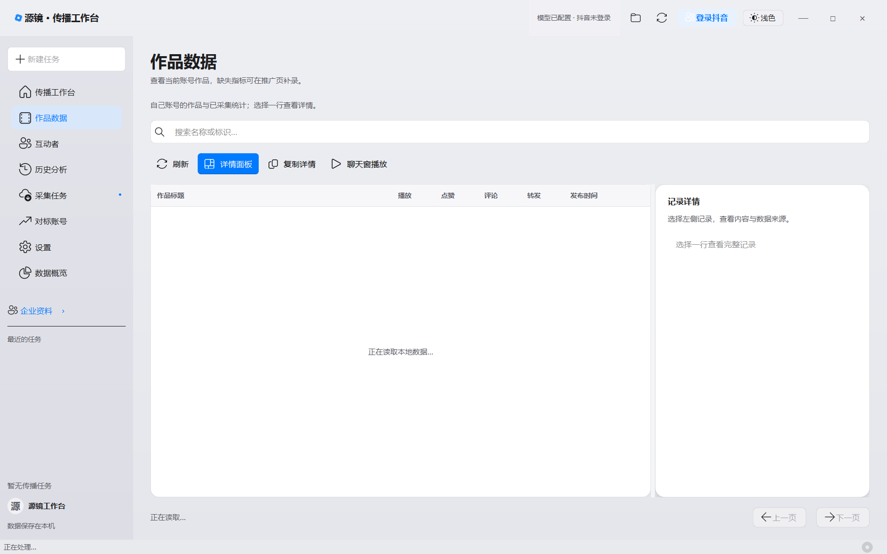
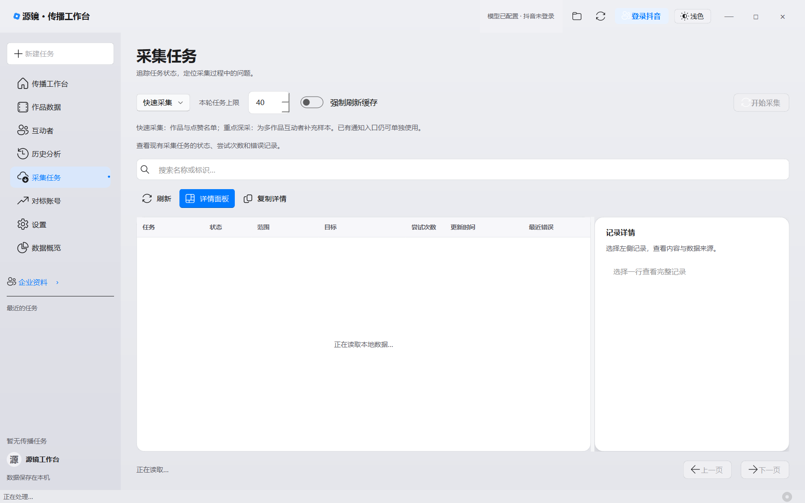
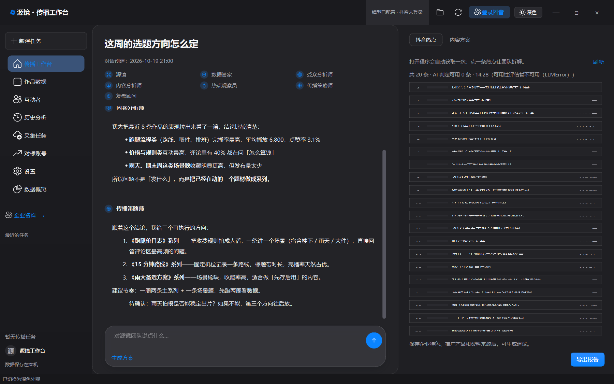

源镜 总管
接单派活。能回答就直接答，需要取数或分析时把活交给对应的同事。
LOCAL-FIRST · 抖音 AI 团队工作台
源镜不是一个只会聊天的助手。你说清楚要什么，总管接单、数据管家取数、受众与内容分析师读数据、 热点观察员盯榜单、策略师给方向、复盘顾问收口——每一步都有依据，数据只留在你自己的电脑里。



同一个问题：内容分析师先读数据，传播策略师再给方向；右侧抖音热点同时带 AI 可用性判定
不是换了个名字的单一体：每个人有独立的人设、可调用的工具和交付物。
接单派活。能回答就直接答，需要取数或分析时把活交给对应的同事。
登录、取点赞人与公开资料、洗库并汇报结果；不做内容判断。
谁在点赞、他们是什么样的人、和内容有多契合，都基于已采集的数据。
播放、互动、题材与发布节奏的规律，只依据真实指标说话。
盯抖音热榜，标注「可用 / 参考 / 不建议」，无关热点直说不建议硬蹭。
把结论落成可执行的选题与节奏，并区分事实、推论与待确认信息。
整理报告、对比历史方案与实际表现，把执行结果说清楚。
不需要学命令、不需要写提示词，像跟同事说话一样。
「这周该发什么」「谁在点赞我的视频」——团队自己判断该谁上，不用你点菜单。
取数、拉热榜、查指标、读评论都在本地完成；缺数据会直说缺什么，不编数字。
选题、节奏、待确认项一起给；不满意可以继续追问，或让复盘顾问整理成报告。
「这周想发点东西，帮我看看该做哪个方向？」
跑腿流程类完播最高（平均播放 6,800，点赞率 3.1%），价格类互动最高，雨天的收藏更高但发布太少——问题不是发什么，而是把已经在动的三个题材做成系列。
给了三个方向：《跑腿价目表》《15 分钟路线》《雨天备选方案》，建议一周两条主系列 + 一条场景题，并标注了「雨天能否稳定出片」这个待确认项。
AI 说的话有出处：任务记录、原始响应、质量检查都留在本地。
作品、指标、评论区、互动者、热榜都由团队调本地工具取回；碰到风控会改用真实浏览器捕获兜底，并标记采集模式。
任务状态、失败原因、质量检查结论都留痕；统计异常和待核验关联会被标出来，程序不会悄悄改你的数据。


当前版本已支持以下核心能力。
| 模块 | 说明 |
|---|---|
| AI 团队 | 七个角色分工协作，按问题自动派活，回复里标明是谁在说话。 |
| 工具调用 | 取数、热榜、指标、评论、报告都由团队调用本地工具完成，结果可回溯。 |
| 热点评估 | 抓抖音热榜并给每条标注「可用 / 参考 / 不建议」和理由，无关热点直说别蹭。 |
| 对话式分析 | 结论可以继续追问深挖；不满意可重新生成，历史版本保留。 |
| 报告与计划 | 传播诊断、内容计划、选题清单可导出，也能人工复核后再生成。 |
| 抖音数据 | 本人作品、播放点赞评论转发、点赞人与评论人、公开资料与作品样本。 |
| 主页兜底 | 接口被风控时改从真实浏览器捕获响应，仍能落库并标记采集模式。 |
| 视频与图文 | 作品可在工作台内直接播放；图文作品支持图片翻页，缓存按容量自动清理。 |
| 质量检查 | 统计异常、待核验关联、资料缺失都会被标出来，不悄悄改数据。 |
| 本地优先 | 数据落在本机数据库；是否使用在线模型由你决定，Key 也只存本地。 |
原生 Windows 桌面程序，解压即用，不需要安装运行库。
不会。取数、热榜、指标都走本地工具，拿不到就直说拿不到；热榜会区分「热点事实」和「结合建议」，缺少的数据标成待确认，而不是补一个像样的数字。
采集、解析、报告生成全部在本机完成。只有你主动使用在线模型生成分析时，才会把需要的企业资料与作品摘要发送给你自己配置的模型服务。
可以。模型与 Key 在设置页填写，只存在本地配置文件里；不同任务可以选择不同模型与思考档位。
用本地浏览器配置目录保存抖音登录态，文件只存在你的电脑上。换账号时会清理旧登录凭据，旧账号作品不再计入「我的作品」。
任务记录里能看到每条任务的状态与最近错误。接口被风控时程序会改用真实浏览器捕获主页响应兜底，并标记采集模式，方便判断这批数据可信到什么程度。
不会。只有点了播放才下载，默认上限 500MB，超限按最久未访问删除，7 天未访问的也会清掉；设置页可以改上限或一键清空。